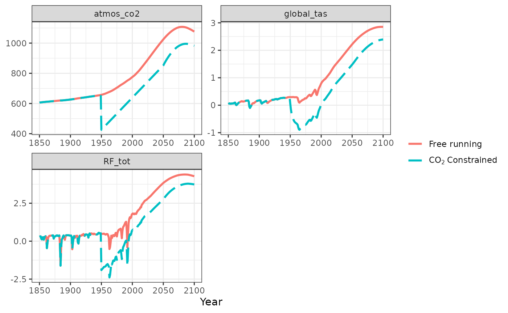
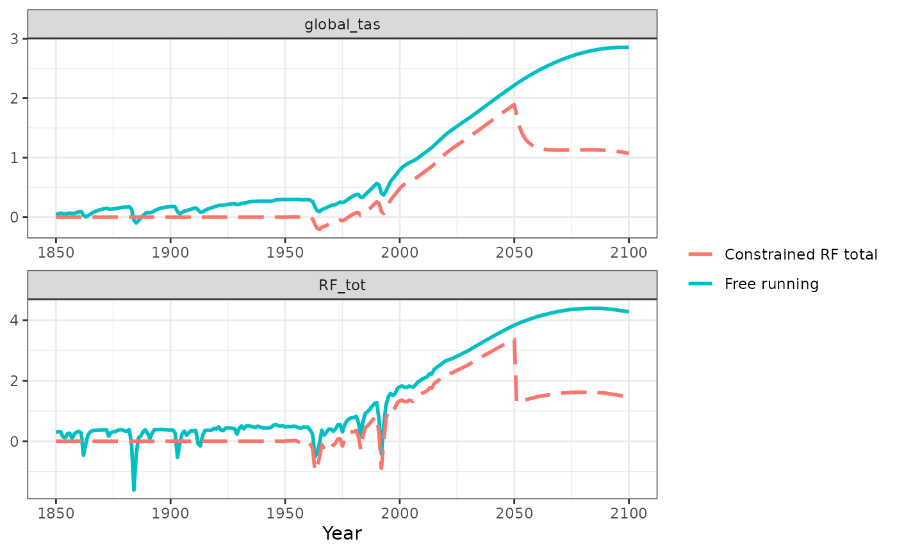
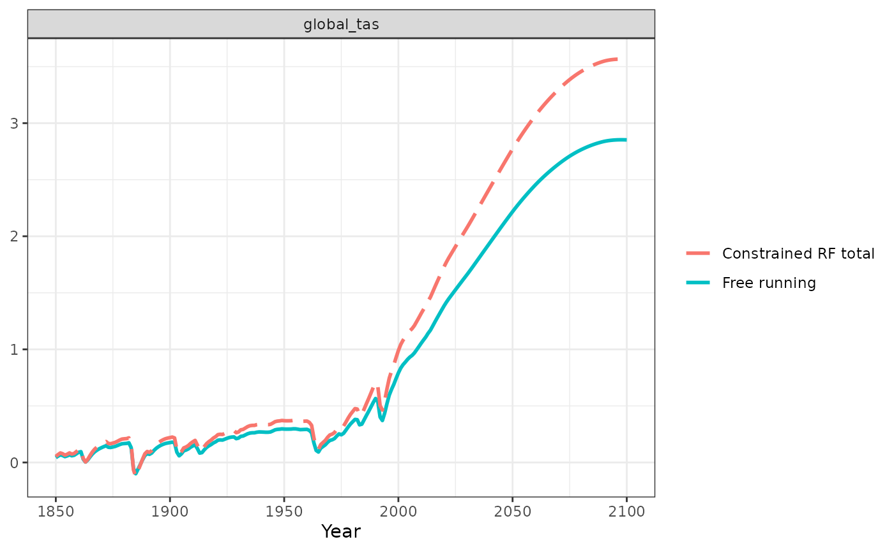
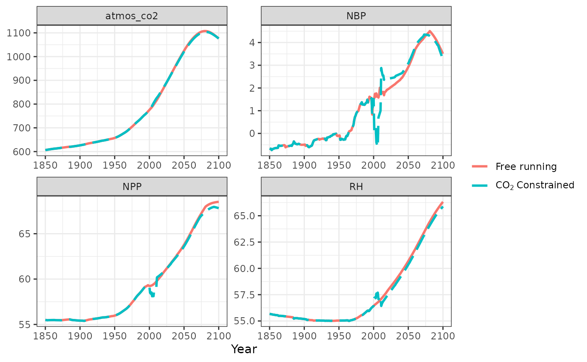

The Hector model can be run subject to constraints that force the model to have a certain behavior. Technically, this means that the model’s components output user-provided data as opposed to their own calculations, similar to the data mode of a CESM sub-model. Currently, the available constraints include:
- GHG concentrations
- Radiative forcing
- Temperature
- Net Biome Production (NBP)
Constraints can be applied to Hector within the ini file
(command-line & R) or using the Hector package setvar()
function.
Setting Constraints in Hector
There are two ways to activate a constraint in Hector: through an ini
file or with the setvar() function in R. Here is a generic
overview of the two different approaches. See below for a more specific
implementation of constraints.
Constraints via the ini file
A Hector input file is broken up into
sections such as [core], [temperature],
[carbon-cycle-solver], and so on. Within each section,
users can define parameter values and pass in input variables –
including constraints. All of the constraint variables are named with
the pattern variable_constrain that points to the csv file
where the variables’ time series are defined. When the line starts the
symbol ;, the constraint is off and Hector is free running.
When the constraint line beings without ;, then Hector is
using the constraint and the user-provided data is used in lieu of
Hector’s internal calculations. Changes to the constraints in the input
files apply to Hector runs executed at the command line or with the R
interface.
Constraints via setvar()
With the Hector R package, the setvar() function can be
used to set constraints for a Hector instance. See below for specific
examples or run help("constraints") or
help("haloconstrain") for the static R help
documentation.
Discontinuous constraints
Hector does not perform any interpolation of constraints – constraints are applied only in the exact years that they are provided by the user, and all other years (including those immediately before or after constrained years) are treated as unconstrained (typically, emissions-driven). This means that constraints can abruptly force Hector’s climate system into a state that is inconsistent with the previous time step. Concentrations for the first year of a constraint can be discontinuous compared to the previous year without a constraint. Concentrations after the last year of a constraint will not necessarily have a discontinuity, but the behavior of the corresponding component and any related components may change after this point. It is the user’s responsibility to make sure that constraints are continuous.
Current Constraint Capabilities
Atmospheric CO2
CO\(_2\) concentrations ([CO\(_2\)], given in ppmv CO\(_2\)) have the largest effect on total radiative forcing and are affected by carbon-cycle climate interactions. Running Hector with the CO\(_2\) concentration constraint turned on mimics the default behavior of the Earth System Models which are GHG concentration driven. This capability is also helpful with debugging. With the atmospheric CO\(_2\) constraint turned on, carbon-cycle and climate feedback parameters (\(Q_{10}\) and \(\beta\)) are essentially ignored.
Uncommenting (removing the ;) from the following line in
the [simpleNbox] section of the input file will turn the atmospheric CO\(_2\) concentration constraint on.
;CO2_constrain=csv:path/to/constraint/file.csvThen the model’s atmospheric CO\(_2\) concentration ([CO\(_2\)], given in ppmv CO\(_2\)) will follow the contents of this file
(which must include at least two columns titled Date and
CO2_constrain). Alternatively, Hector’s atmospheric CO\(_2\) concentration constraint can be set
using the setvar() function and
CO2_CONSTRAIN().
Here is an example in R.
# Set up an instance of Hector & run, this is the free running Hector to be
# used as a comparison to the constrained Hector
ini <- system.file("input/hector_ssp245.ini", package = "hector")
core <- newcore(ini, name = "ssp245")
invisible(run(core)) # `invisible` prevents Hector core info from being printed out
# Extract the output
dates_to_keep <- 1850:2100
vars_to_keep <- c(ATMOSPHERIC_CO2(), RF_TOTAL(), GLOBAL_TAS())
free_out <- fetchvars(core, 1850:2100, vars = vars_to_keep)
# Make a time series of new CO2 values to use as the constraint
constraint_yrs <- 1950:2050
new_co2 <- seq(from = 200, to = 400, length.out = length(constraint_yrs))
# Use setvar() to set up the the constraint, reset and run Hector, and fetch the results
setvar(core, dates = constraint_yrs, var = CO2_CONSTRAIN(), values = new_co2,
unit = getunits(CO2_CONSTRAIN()))
reset(core)## Hector core: ssp245
## Start date: 1745
## End date: 2300
## Current date: 1745
## Input file: /home/runner/work/_temp/Library/hector/input/hector_ssp245.iniPlot results from the free running Hector with the constrained Hector.

How the constraint is implemented in Hector (C++)
The CO\(_2\) constraint is applied at the end of the current time step. The full sequence of events is as follows: First, the model solves the current time-step’s carbon cycle conditioned on the previous time step’s carbon pools, ignoring the CO\(_2\) constraint. Then, if a CO\(_2\) constraint is present, Hector calculates the difference between its calculated atmospheric CO\(_2\) and the prescribed CO\(_2\) constraint. If the target atmospheric CO\(_2\) concentration is lower than the calculated CO\(_2\), the excess carbon is transferred from the atmosphere to the deep ocean; conversely, if the target atmospheric CO\(_2\) concentration is greater than the calculated value, the additional carbon is transferred from the deep ocean into the atmosphere. Finally, Hector records the current atmospheric CO\(_2\) concentration (which is now equal to the constraint value); this is the value that is used in the next time step’s evaluation of carbon-climate feedbacks (e.g. CO\(_2\) fertilization of net primary productivity, surface ocean carbonate chemistry…). In other words, an atmospheric CO\(_2\) constraint at time \(t\) does not affect carbon-climate feedbacks until \(t+1\).
The CO\(_2\) constraint need not span the entirety of the Hector simulation, or even be continuous. At any given time step, Hector will check whether or not a CO\(_2\) constraint exists at that time step and only apply the constraint if it is present. This means that “hybrid” runs are possible, where only some specific time ranges have CO\(_2\) constraints while others calculate the atmospheric carbon pool and CO\(_2\) concentrations according to Hector’s standard carbon cycle.
Non CO2 concentrations
Hector can constrain non CO\(_2\) GHG concentrations (N\(_2\)O, CH\(_4\), and halocarbons). These all work in more-or-less the same way as the atmospheric CO\(_2\) constraint (above), except that there is no equivalent to the carbon pool adjustment for these gases.
In the input file, they are triggered by a line like the following in their corresponding component section:
X_constrain=csv:path/to/file.csvAs with other CSV inputs, the /path/to/file.csv above
must include columns for Date and
X_constrain.
Alternatively, constraints can be set from the R interface using
setvar(). Implementing these constraints follows the same
pattern as the temperature, radiative forcing, and atmospheric CO\(_2\): Set up an active Hector core, use
setvar() to set the constraint, run, and fetch the output
from the Hector core.
How the constraint is implemented in Hector (C++) using CH4 as an example
At any given time step, Hector will check if the constraint has a
value for that time step (e.g. CH4_constrain.exists(t)). If
the constraint exists, Hector will skip all atmospheric chemistry
calculations and set the corresponding atmospheric concentration value
to the constraint value
(e.g. CH4.set(t, CH4_constrain.get(t)). If the constraint
does not exist, Hector will proceed with its standard atmospheric
chemistry routines for calculating the atmospheric concentration based
on emissions and concentrations of other relevant species. This means
that concentration constraints always take precedence over
emissions; in other words, if a particular time step has both an
emissions and a concentration constraint, the emissions constraint is
ignored.
Note that CH\(_4\) and N\(_2\)O have special variables for their pre-industrial concentration that could conflict with the constraint. In Hector, concentration constraints take precedence over pre-industrial concentrations; in other words, Hector assumes that if you provide a concentration constraint for the pre-industrial timestep, that is the concentration you want, regardless of the prescribed pre-industrial value. The equations for CH\(_4\) and N\(_2\)O concentrations to radiative forcing were parameterized with specific pre-industrial concentrations. Users must be cautions of changes to pre-industrial values and how it may affect the radiative forcing calculations.
Radiative forcing
The model’s global radiative forcing Ftot which drives
global temperature changes can be constrained. Free running Hector
calculates Ftot based on the radiative forcing
contributions from GHG concentrations, aerosol emissions, and forcing
inputs [UNSURE WORDING] (e.g. land albedo and solar forcing). Using the
radiative forcing constraint Ftot_constrain means any
parameters and/or variables that affect radiative forcing (such as
carbon cycle feedback parameters or emissions) will not affect
Ftot while the constraint is in effect. The model will
extrapolate within the Ftot_constrain as necessary, but not
beyond its endpoints. Once Hector’s internal date passes the last date
for Ftot_constrain, the model’s forcing component becomes
unconstrained.
Uncommenting (removing the ;) from the following line in
the [forcing] section of the input file will turn the radiative forcing
constraint on.
;Ftot_constrain=csv:path/to/constraint/file.csvHere is an example of using the R package to implement the radiative forcing constraint.
# Set up an instance of Hector & run
ini <- system.file("input/hector_ssp245.ini", package = "hector")
core <- newcore(ini, name = "ssp245")
invisible(run(core)) # the invisible call prevents Hector core info from being printed out
# Extract the output.
dates_to_keep <- 1850:2100
vars_to_keep <- c(RF_TOTAL(), GLOBAL_TAS())
free_out <- fetchvars(core, 1850:2100, vars = vars_to_keep)
# Make a time series of new RF values to use as the RF constraint. We are only
# going to change the RF for a subset of the years.
new_rf <- free_out[free_out$variable == RF_TOTAL() & free_out$year %in% 1950:2050, ]
new_rf$value <- new_rf$value + 3 # increase the total RF
# Use setvar() to set up the the constraint, reset and run Hector, and fetch the results.
setvar(core, dates = new_rf$year, var = FTOT_CONSTRAIN(), values = new_rf$value, unit = "W/m2")
reset(core)## Hector core: ssp245
## Start date: 1745
## End date: 2300
## Current date: 1745
## Input file: /home/runner/work/_temp/Library/hector/input/hector_ssp245.iniPlot the total radiative forcing and global mean temperature. Recall the constraint is only in effect between 1950 and 2050.

Temperature
Uncommenting (removing the ;) from the following line in
the [temperature] section of the input file will turn the global mean
constraint on.
tas_constrain=csv:path/to/constraint/file.csvThen the model’s global mean temperature global_tas will
follow the contents of this file (which must contain columns titled
Date and tas_constrain; a sample file is
included in the repository (see
inst/input/tables/tgav_historical.csv). The model will
extrapolate within this data as necessary, but not beyond its
endpoints.
Once Hector’s internal date passes the last date in the constraint
file, the model’s temperature component becomes unconstrained,
except that we do not permit it to suddenly jump to a new temperature.
Instead, changes in global radiative forcing (from which temperature
change is computed) are applied to the end-of-constraint temperature.
For more details, see the detailed comments in the
TemperatureComponent::run (temperature_component.cpp).
Here is an example of using the R package to implement the global
average mean temperature (global_tas) constraint.
# Set up an instance of Hector & run
ini <- system.file("input/hector_ssp245.ini", package = "hector")
core <- newcore(ini, name = "ssp245")
invisible(run(core)) # `invisible` prevents Hector core info from being printed
# Extract the output
dates_to_keep <- 1850:2100
vars_to_keep <- c(GLOBAL_TAS())
free_out <- fetchvars(core, 1850:2100, vars = vars_to_keep)
# Make a time series of new temperature values to use as the constraint
new_tgav <- free_out[free_out$variable == GLOBAL_TAS(), ]
new_tgav$value <- new_tgav$value + new_tgav$value * 0.25 # increase global temp by 25%
# Use setvar() to set up the the constraint, reset and run Hector, and fetch the results
setvar(core, dates = new_tgav$year, var = TAS_CONSTRAIN(), values = new_tgav$value,
unit = getunits(TAS_CONSTRAIN()))
reset(core)## Hector core: ssp245
## Start date: 1745
## End date: 2300
## Current date: 1745
## Input file: /home/runner/work/_temp/Library/hector/input/hector_ssp245.iniPlot the total radiative forcing and global mean temperature. Recall the constraint is only in effect between 1950 and 2050.

NBP
The NBP constraint can be activated via the ini file by adding the line
NBP_constrain=csv:path/to/constraint/file.csvto the [simpleNbox] section of the input file, where the constraint csv file has
columns titled Date and NBP_constrain similar
to the sample file is included in the repository (see
inst/input/tables/tgav_historical.csv).
Here is an example implemented in the R interface
constraint_yrs <- 2001:2010
constraint_values <- c(0.1, 0.2, 0.3, -0.4, -0.5, -0.6, 0.7, 0.8, 0.9, 1.0)
ini <- system.file("input/hector_ssp245.ini", package = "hector")
core <- newcore(ini, name = "ssp245")
invisible(run(core)) # `invisible` prevents Hector core info from being printed out
# Extract the output
dates_to_keep <- 1850:2100
vars_to_keep <- c(ATMOSPHERIC_CO2(), NBP(), NPP(), RH())
free_out <- fetchvars(core, 1850:2100, vars = vars_to_keep)
# Use setvar() to set up the the constraint, reset and run Hector, and fetch the results
setvar(core, dates = constraint_yrs, var = NBP_CONSTRAIN(), values = constraint_values,
unit = getunits(NBP_CONSTRAIN()))
reset(core)## Hector core: ssp245
## Start date: 1745
## End date: 2300
## Current date: 1745
## Input file: /home/runner/work/_temp/Library/hector/input/hector_ssp245.iniPlot results from the free running Hector with the constrained Hector.

The model hits the constraint exactly by raising RH and lowering NPP. Because of this, atmospheric CO\(_2\) rises rapidly during the constraint period, as we’ve basically shut down the land C sink. As a result, when the model exits the constraint period, NPP shoots up very high (because the atmosphere is saturated with CO\(_2\)). In a similar vein, the suppressed NPP means, once outside of the constraint, that RH is low and thus the land becomes a large sink as it draws down the excess atmospheric CO\(_2\).